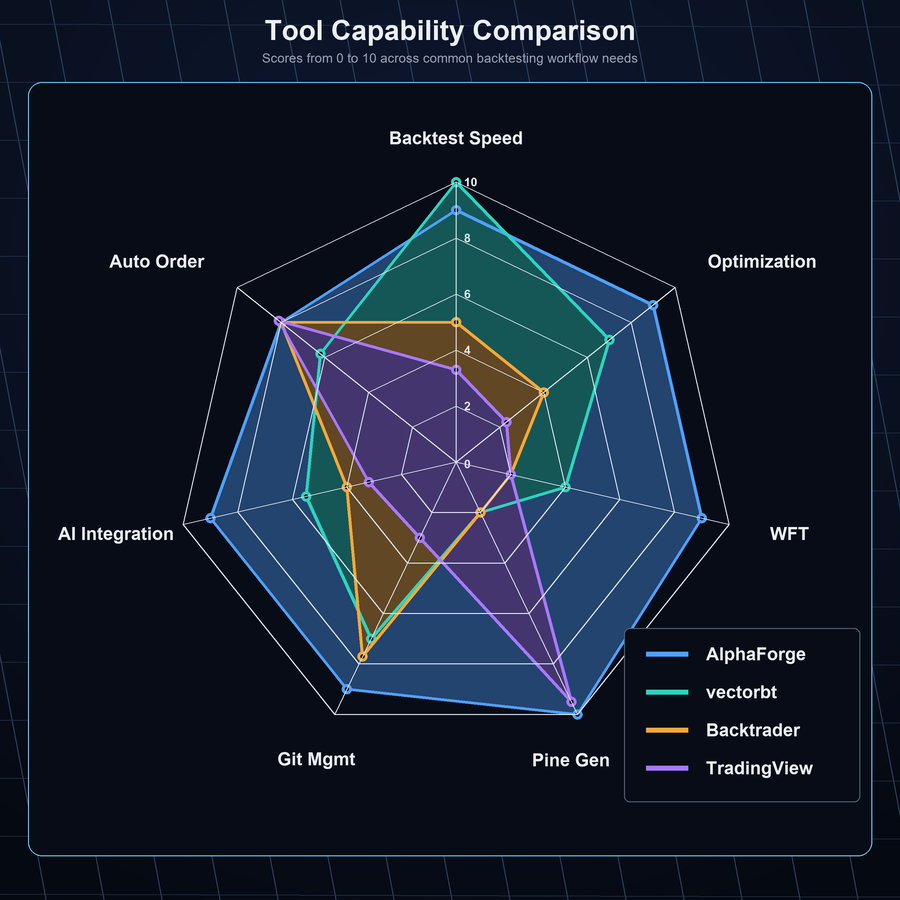
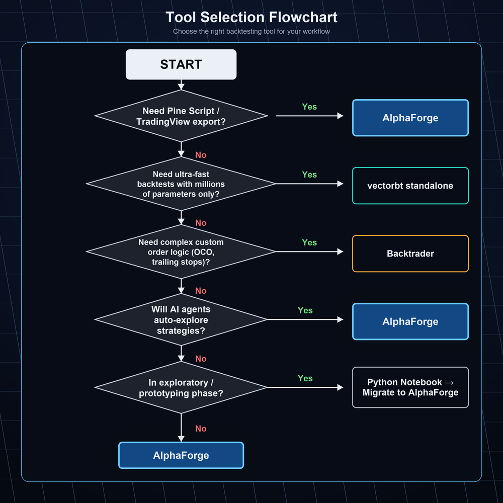

Comparison with Other Tools¶
This page provides an honest comparison of AlphaForge against commonly used alternatives. We'll cover not only where AlphaForge excels, but also where other tools may be a better fit. Use this to make an informed decision.
Quick Comparison Table¶
| Aspect | AlphaForge | Backtrader | vectorbt | TradingView | Python Notebooks |
|---|---|---|---|---|---|
| Backtest Speed | Fast (vectorbt-based) | Slow (event-driven) | Fastest | Moderate | Depends on implementation |
| Parameter Optimization | Optuna (Bayesian) | Manual / Grid | Basic scanning | None | Manual |
| Walk-Forward Validation | Built-in | Manual implementation | Manual implementation | None | Manual implementation |
| Pine Script Generation | Automatic | None | None | Hand-written | None |
| Reproducibility (Git) | Full (JSON-defined) | Code-dependent | Code-dependent | Limited | Difficult |
| AI Agent Integration | Native (JSON-driven) | Difficult | Difficult | Difficult | Possible (manual) |
| Live Order Integration | TradingView → AlphaStrike | Custom implementation | Custom implementation | Via alerts | Custom implementation |
| Learning Curve | CLI + JSON | Python classes | Python + NumPy | Pine Script | Python |

AlphaForge vs Backtrader¶
Backtrader's Strengths¶
Backtrader is a mature, event-driven backtesting framework.
- High customizability — Complex order logic (OCO, trailing stops, etc.) can be flexibly implemented in Python
- Live trading support — Direct broker connections including Interactive Brokers
- Community and track record — Years of real-world use with abundant code examples
Backtrader's Limitations¶
- Event-driven simulation (bar-by-bar processing) is significantly slower than vectorbt
- Bayesian optimization and walk-forward validation are not built-in and require custom implementation
- No Pine Script generation; TradingView integration requires separate work
- Not designed with AI agent integration in mind
When to Choose Which¶
| Choose AlphaForge | Choose Backtrader |
|---|---|
| You want fast optimization cycles | You need complex order logic (OCO, trailing stops, etc.) |
| You want systematic walk-forward validation | You need direct broker connections (e.g., Interactive Brokers) |
| You want TradingView alerts with automated order execution | You have an existing Backtrader codebase |
| You want to automate strategy exploration with Claude Code | You need precise event-driven control over execution logic |
AlphaForge vs vectorbt Standalone¶
About vectorbt¶
AlphaForge uses vectorbt internally. This means vectorbt is not a competitor — it's a foundational component of AlphaForge.
Strengths of using vectorbt standalone:
- Fastest backtesting — NumPy-based vectorized computation for massive datasets in seconds
- Maximum flexibility — Custom indicators and complex conditions written freely in Python
- Seamless library integration — Works naturally with Pandas, Matplotlib, and other Python tools
What AlphaForge Adds on Top of vectorbt¶
| vectorbt Standalone | AlphaForge (vectorbt + Integration Layer) |
|---|---|
| Strategy defined in Python code | Strategy defined in JSON (easy Git management) |
| Optimization requires custom implementation | Bayesian optimization via Optuna in a single CLI command |
| Walk-forward testing requires custom implementation | Walk-forward validation built-in |
| No Pine Script generation | Automatically generates Pine Script v6 from optimized parameters |
| No journal functionality | Experiment results automatically recorded as JSON/CSV |
| AI agent integration is non-standard | JSON-driven design makes it easy for Claude Code and others to read/write |
When to Choose Which¶
Use vectorbt directly when you're developing custom indicators or doing exploratory analysis with Python APIs. Choose AlphaForge when you want to repeatedly run the full pipeline: backtesting → optimization → WFT → Pine Script generation.
AlphaForge vs TradingView Standalone¶
TradingView's Strengths¶
TradingView excels as a charting and community platform.
- Real-time charts and rich indicators — Industry-standard visual environment used by traders worldwide
- Pine Script community — Thousands of published scripts to instantly use and adapt
- Alerts and Webhooks — Automatic Webhook notifications when conditions trigger
- Ease of use — Chart analysis without programming experience
TradingView Standalone Limitations¶
- Pine Script backtesting offers basic functionality without Bayesian optimization or WFT
- Parameter exploration (testing many combinations) is impractical in a browser environment
- Managing experiment reproducibility (tracking which parameters were tested) is difficult
AlphaForge and TradingView Are Complementary¶
AlphaForge and TradingView are not competitors — they work together.
AlphaForge: backtest and optimize strategy
↓
forge command: automatically generate Pine Script v6
↓
Paste into TradingView for real-time monitoring
↓
Condition triggers → TradingView alert → AlphaStrike executes order automatically
For TradingView users, AlphaForge acts as a "scientific factory for creating Pine Scripts." See the TradingView Users Guide for details.
AlphaForge vs Manual Python Notebooks¶
Python Notebook Strengths¶
Jupyter Notebook and Google Colab are excellent for exploratory analysis.
- Immediate feedback — Run cells one at a time to quickly validate ideas
- Visualization — Rich inline charts with Matplotlib, Plotly, and others
- Freedom — Combine any library you want
Challenges with Manual Notebooks¶
| Challenge | Details |
|---|---|
| Reproducibility | Changing cell execution order or variable state changes results |
| Parameter tracking | Difficult to track "which settings produced good results" |
| Automation barrier | Separate infrastructure needed to run notebooks automatically overnight |
| Git management | .ipynb file diffs are hard to read and difficult to review |
| AI agent integration | Inefficient for Claude Code to read/write notebook state |
How to Use Each¶
Notebooks are ideal for the early exploration phase of an idea. Once an idea solidifies and you want to "systematically optimize, validate, and reproduce" it, migrating to a JSON strategy in AlphaForge makes management and automation straightforward.
Why CLI + JSON Strategy?¶
Here's why AlphaForge defines strategies in JSON rather than Python code.
Reason 1: Complete Reproducibility via Git¶
{
"strategy": "cl_hmm_bb_rsi_v1",
"symbol": "CL=F",
"params": {
"hmm_states": 3,
"bb_period": 20,
"rsi_period": 14,
"rsi_upper": 65
},
"seed": 42
}
Commit this JSON and anyone, at any time, on any machine can reproduce exactly the same result. This reproducibility — difficult to achieve with notebooks that mix code and parameters — is what JSON delivers.
Reason 2: Natural Fit for AI Agents¶
AI agents like Claude Code can naturally read and write JSON files. This enables:
- AI to autonomously create and modify strategies
- AI to analyze backtest results and suggest next parameters
- Overnight loops exploring hundreds of strategies automatically
See the AI Agent Users Guide for details.
Reason 3: Separation of Noise and Signal¶
Separating strategy logic (code) from parameters (values) means:
- Parameter change reviews become easy (diffs are readable)
- A/B testing (same logic, different parameters) can be managed explicitly
- Integration into CI/CD pipelines is straightforward
Why Walk-Forward Validation?¶
The Overfitting (Curve-Fitting) Risk¶
When you optimize parameters on backtest data, there's a risk of overfitting to historical data.
Problematic optimization flow:
All historical data → Parameter optimization → Backtest on same data
↑ Optimizing with "knowledge" of the past
This approach can make non-functional parameters appear "excellent."
What Walk-Forward Validation Is¶
Walk-Forward Testing (WFT) splits time-series data into In-Sample (IS) training periods and Out-of-Sample (OOS) validation periods:
WFT structure (5-fold example):
IS: 2018-2020 → Optimize → Validate on OOS: 2021
IS: 2019-2021 → Optimize → Validate on OOS: 2022
IS: 2020-2022 → Optimize → Validate on OOS: 2023
IS: 2021-2023 → Optimize → Validate on OOS: 2024
IS: 2022-2024 → Optimize → Validate on OOS: 2025
→ Aggregate 5 OOS periods = True generalization performance
Running WFT in AlphaForge¶
# Run 5-fold walk-forward validation with a single command
forge optimize walk-forward CL=F --strategy cl_hmm_bb_rsi_v1 --folds 5
A large gap between IS and OOS Sharpe ratios suggests overfitting:
IS Period OOS Period Sharpe(IS) Sharpe(OOS) Assessment
2020-22 2023 1.8 1.4 22% drop → acceptable
2020-22 2023 2.5 0.3 88% drop → likely overfit
See the Quants & Researchers Guide for details.
Summary: Which Tool Should You Choose?¶
| Situation | Recommendation |
|---|---|
| You need precise event-driven control over complex order logic | Backtrader |
| You want to work directly with NumPy-level fast computation | vectorbt standalone |
| You want real-time charts and community strategy access | TradingView |
| You want to quickly test ideas (exploration phase) | Python Notebooks |
| You want end-to-end management: backtest → optimize → WFT → Pine Script → auto-execution | AlphaForge |
| You want to automate strategy exploration with AI agents | AlphaForge |
| You want to enhance TradingView with scientific backtesting | AlphaForge + TradingView |
AlphaForge is not a "do-everything" universal tool. If you need complex event-driven logic or direct connections to specific brokers, consider combining with other tools.

Related Docs¶
- Getting Started — Installation and first backtest
- TradingView Users — TradingView integration workflow
- Quants & Researchers — Optimization and walk-forward validation details
- AI Agent Users — Automation loops with Claude Code
- End-to-End Strategy Development Workflow — Full overview